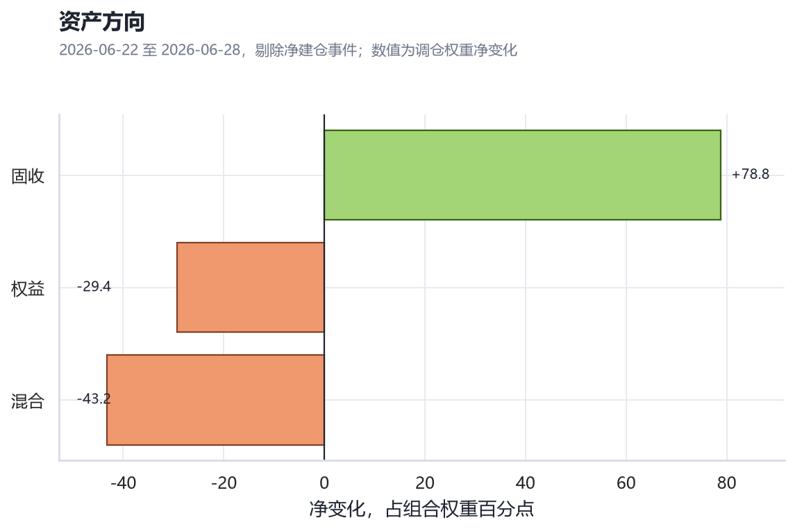
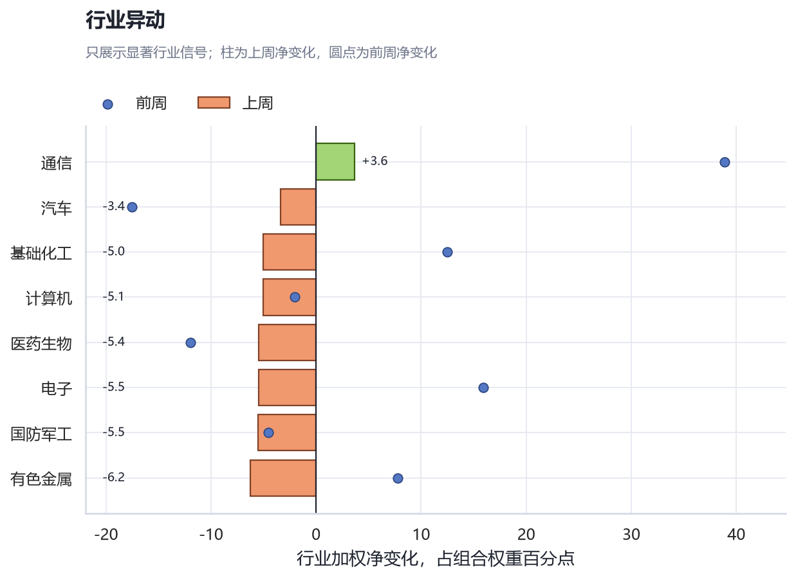

全市场投顾周度调仓
上周调仓：固收承接，权益降温
核心判断
上周不是全面进攻，资金主要从权益和混合资产撤出，转向债券承接。行业上，有色金属、电子、基础化工、国防军工、计算机走弱；通信仍为小幅净流入，但从 +38.87pct 降至 +3.65pct。
如何读胜率
胜率是参与策略的历史调仓后验质量，不是本周动作的即时对错。主要信号历史胜率集中在 42% 至 45%，因此用于排序和跟踪，不直接当作高确定性判断。
胜率是参与策略的历史调仓后验质量，不是本周动作的即时对错。主要信号历史胜率集中在 42% 至 45%，因此用于排序和跟踪，不直接当作高确定性判断。
结构性换手
633.17pct
较前周下降 43.8%
固收净流入
+78.84pct
主承接资产
权益+混合
-72.58pct
风险预算回撤
行业可解释换手
314.19pct
258 条调仓可拆行业
证据图：资产方向与行业反转


行业显著信号
- 有色金属-6.25pct前周 +7.75pct
- 电子-5.45pct前周 +15.91pct
- 基础化工-5.02pct前周 +12.46pct
- 国防军工-5.55pct前周 -4.57pct
- 计算机-5.06pct前周 -2.04pct
- 医药生物-5.44pct前周 -11.98pct
广发产品线索
- 广发景宁债券C+17.00pct正向线索明确，银华活钱加与目标盈建仓共同贡献流入。
- 广发景明中短债C-8.94pct主要体现为景明中短债向景宁债券的内部替换。
- 广发成长启航混合C-7.09pct跨 3 家机构减仓，属于广发权益产品本周最需要跟踪的负面线索。
下周只盯三件事
- 固收流入是否连续观察重点看纯债和中短债之间的替换。
- 电子、有色、化工是否继续走弱观察确认是短期再平衡还是行业观点切换。
- 广发成长启航混合C是否延续减仓跟进若延续，拆同类替代基金和调仓原因。
口径：剔除净建仓事件后的结构性调仓；行业使用基金经济行业暴露加权。